Assignment 1 - Distance to a Function and Function Fitting
This section investigates the shortest distance between a point and a mathematical function.
The handwritten calculus solution is included below in two images.
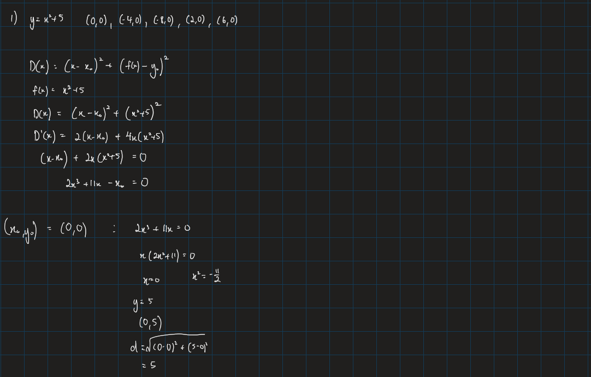
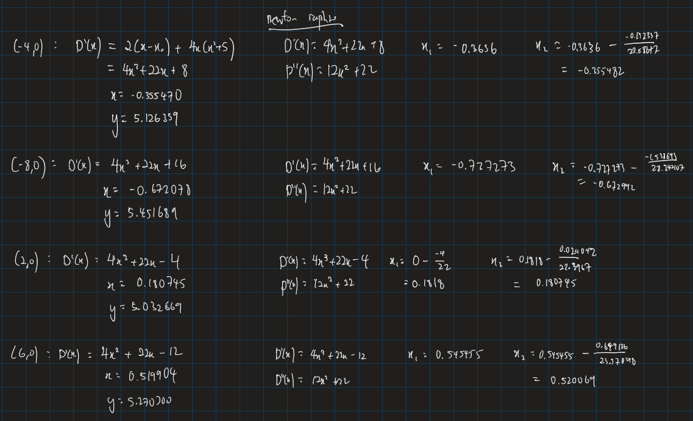
For a point (x0, y0) and the parabola f(x) = x2 + 5, the squared distance is
D(x) = (x - x0)2 + (x2 + 5 - y0)2.
Differentiating and setting the derivative equal to zero gives
D'(x) = 2(x - x0) + 4x(x2 + 5 - y0) = 0.
The handwritten solutions above show the algebraic work. The table below reports the closest point and minimum distance for each required point.
| Given point | Closest point on y = x2 + 5 | Minimum distance |
|---|---|---|
| (0, 0) | (0.000000, 5.000000) | 5.000000 |
| (-4, 0) | (-0.355470, 5.126359) | 6.289845 |
| (-8, 0) | (-0.672078, 5.451689) | 9.133420 |
| (2, 0) | (0.180745, 5.032669) | 5.351396 |
| (6, 0) | (0.519904, 5.270300) | 7.603125 |
The following plots show the Newton-Raphson and golden-section iterations for the parabola and additional functions.
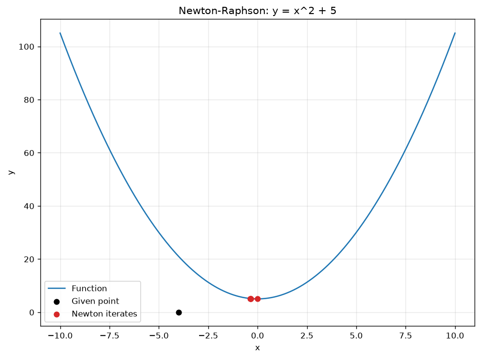
This plot shows the shrinking search intervals used by the golden-section method. The first interval is the widest and appears light orange. Each later interval is smaller and moves toward the closest point. Where several transparent intervals overlap, the color appears darker, showing the progressively smaller search region.
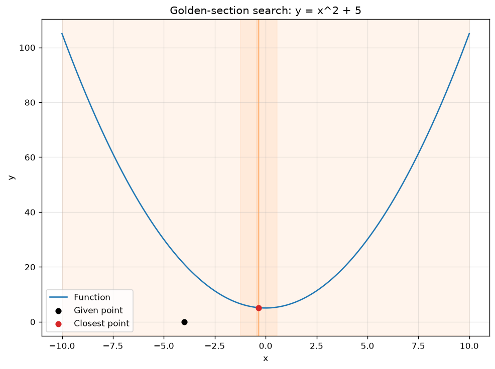
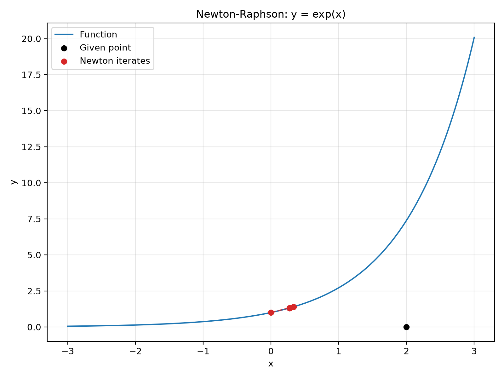
The light orange region represents the initial search interval. The narrower regions show later golden-section iterations. Darker overlapping areas indicate where the search interval has become smaller around the estimated closest point.
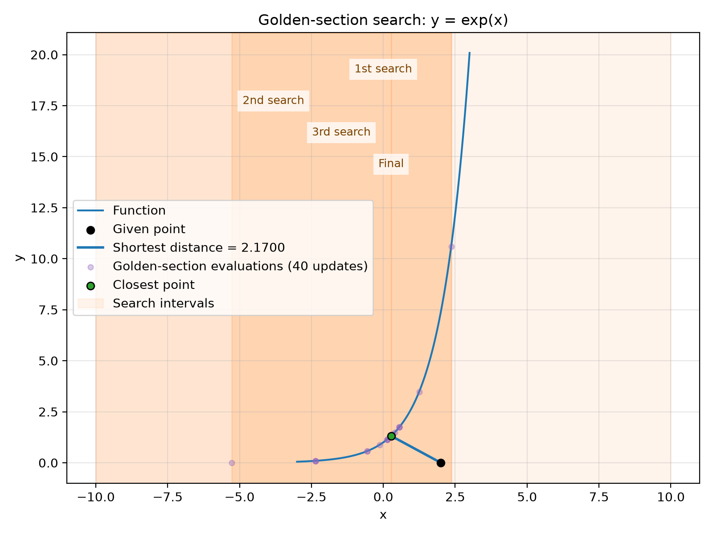
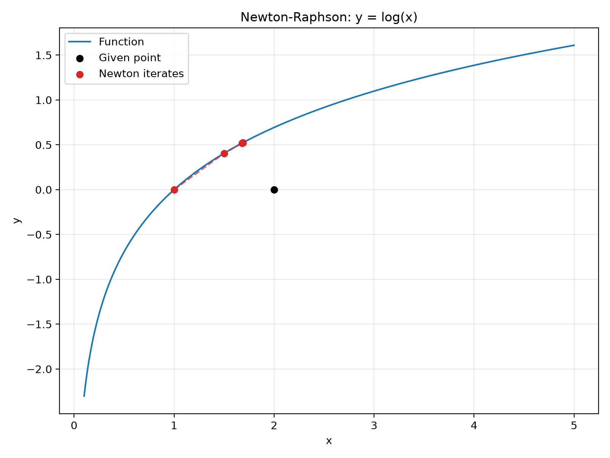
The golden-section intervals shrink from the original wide interval toward the minimum-distance location. Light orange shows the early broad search, while darker overlapping orange shows the later, tighter boundary around the closest point.
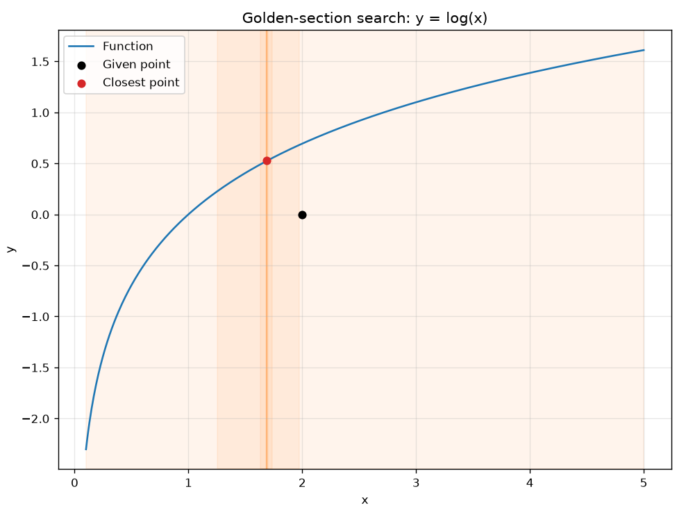
The complete Python source code is available here: part1.py.
This section fits a line and a parabola to the data points (0, 0.5), (2, 3.5), (1, 1.5), and (3, 7.5).
The handwritten analytical work is shown in the three images below.
Add them to the media folder using the filenames shown.
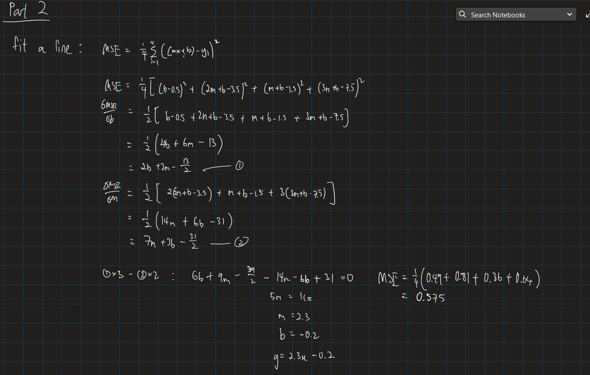
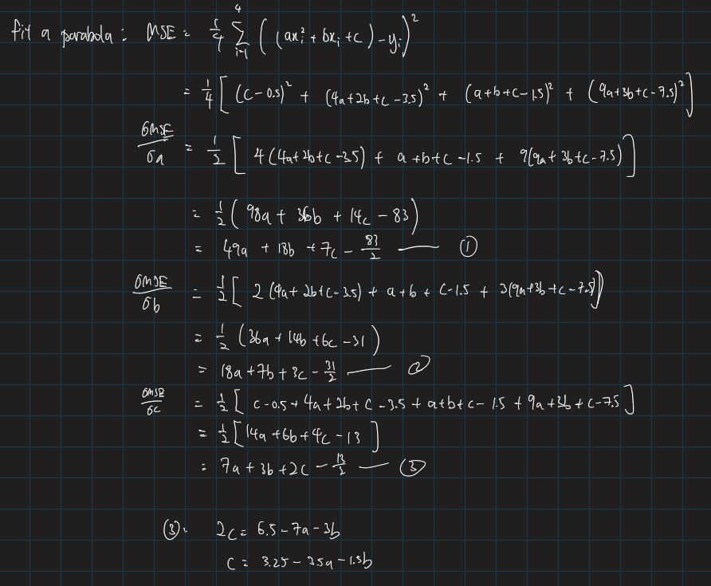
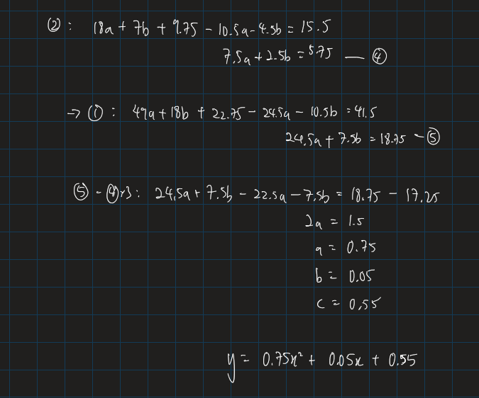
For a model y = Σthetajφj(x), the mean squared error is
MSE = (1/n) Σ(ypredicted - yactual)2.
| Model | Analytical fit | Newton-Raphson fit | MSE |
|---|---|---|---|
| Line | y = 2.3x - 0.2 | y = 2.3x - 0.2 | 0.575 |
| Parabola | y = 0.75x2 + 0.05x + 0.55 | y = 0.75x2 + 0.05x + 0.55 | 0.0125 |
The analytical solution uses the normal equations (XTX)θ = XTy. The numerical solution uses multivariable Newton-Raphson with the gradient and Hessian of the MSE.
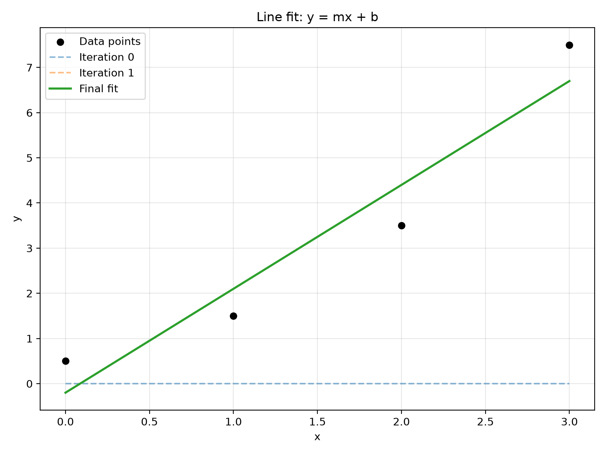
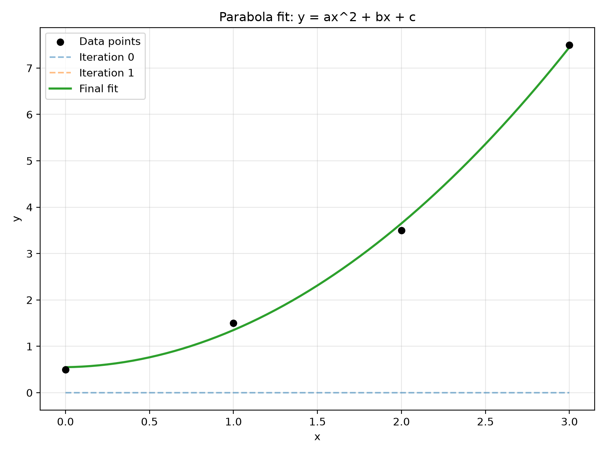
The complete Part 2 Python source code is available here: part2.py.